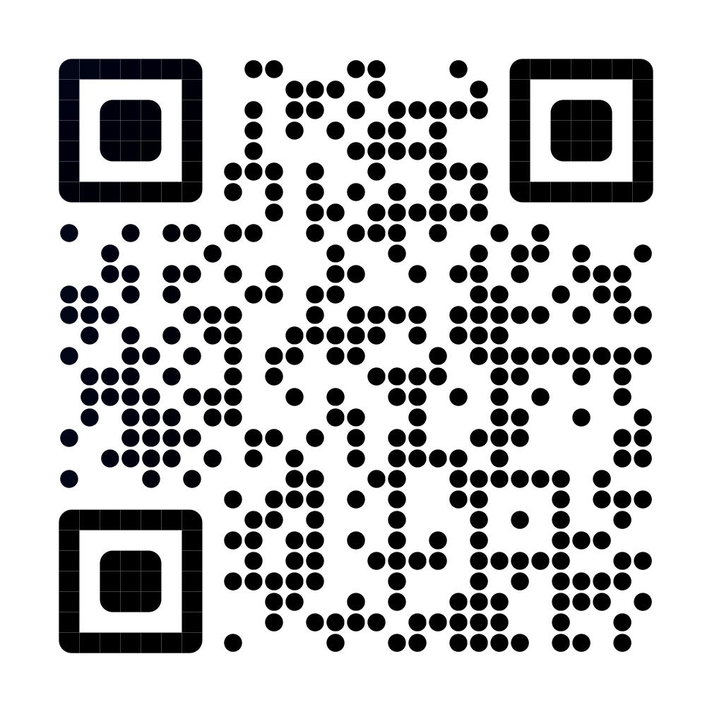

复制过的东西，都晾在绳上，点一下就粘贴
鼠标停在刘海上，绳滑下来；在全屏应用上也能放。移开就收起，不打断手头的事。
停顿时长三档可选：0.15 / 0.25 / 0.4 秒。
打开「新截图自动上绳」，macOS 自带的⌘⇧3/4截图落盘即挂绳——截完不用再复制一次。
默认关闭；关闭开关或退出应用时，会自动恢复原来的保存位置。
文字、链接、颜色、图片、文件，各自成卡；一条筛选栏，一眼找到刚才那一下。
颜色卡直接显示色块，点一下回到剪贴板。
点绳中间上方的 +，写一张便签。清单、待办也都可以晾在同一条绳上，想看哪条看哪条。
多种底色可选，每张便签自己挑。
两种方式选一种：刘海左右分区——左半剪贴板、右半便签；或者通过修饰键翻转。
快捷键可录制，默认 ⌃⌥C 剪贴板、⌃⌥N 便签，冲突即时提示。
复制文件或文件夹，它就晾在绳上；要用了拖下来，丢进聊天窗口、邮件、终端都行。不用常驻一个侧边暂存架，绳子本身就是暂存架。
一次复制多个也是一张卡，拖出来就复制。
全部功能都在这，代码公开在 GitHub。签了名但没有公证——首次启动 macOS 会拦一下，去「系统设置 → 隐私与安全性」点「仍要打开」就行，只此一次。
前往下载正在开发中，还没上架。目标是跟完整版保持一致，目前受 App Store 沙盒限制还有几处差别——详见下表。换来的是双击即用、不必去系统设置放行，更新由 App Store 自动完成。先以免费上架；日后若转为收费，已经下载过的用户不受影响。
前往下载下表是两版的全部差异。除此之外的一切——剪贴板绳、便签绳、钉住、筛选、搜索、拖拽、右键菜单、保留天数——两版完全一致。
| 功能 | 苹果专版 | 完整版 |
|---|---|---|
| 剪贴板绳 · 便签绳 | ✓ | ✓ |
| 刘海停顿 / 快捷键呼出 | ✓ | ✓ |
| 钉住 · 筛选 · 搜索 · 拖拽 | ✓ | ✓ |
| 监视文件夹 | ✓ | ✓ |
| 新截图自动上绳 | 手动设置 | ✓ |
| 双击卡片直接粘贴回原来的应用 | — | ✓ |
| 全屏应用上也能放绳 | — | ✓ |
| 首次启动 | 双击即用 | 系统设置里点「仍要打开」 |
| 更新方式 | App Store 自动更新 | 手动下载新版 |
| 新功能到达 | 随审核，略晚一些 | 第一时间 |
| 价格 | 暂时免费 | 免费开源 |
两版 bundle id 不同，可以同时装，但绳上内容各自独立。同时开启可能会引起冲突。
Clothespeg 免费开源，不放广告，也没有付费墙。 如果它帮你省了时间，欢迎请作者喝杯咖啡，这是对一根晾衣绳最实在的鼓励。

扫码请喝，或 打开收款页面 ↗